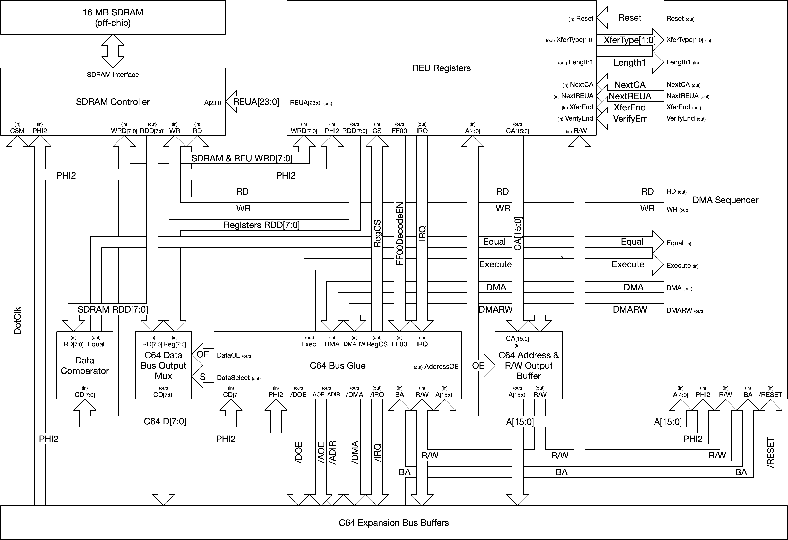
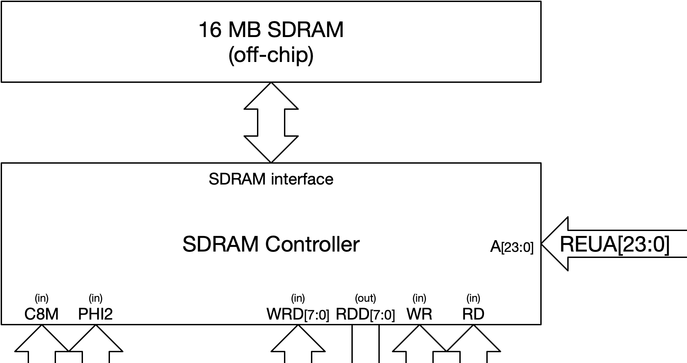
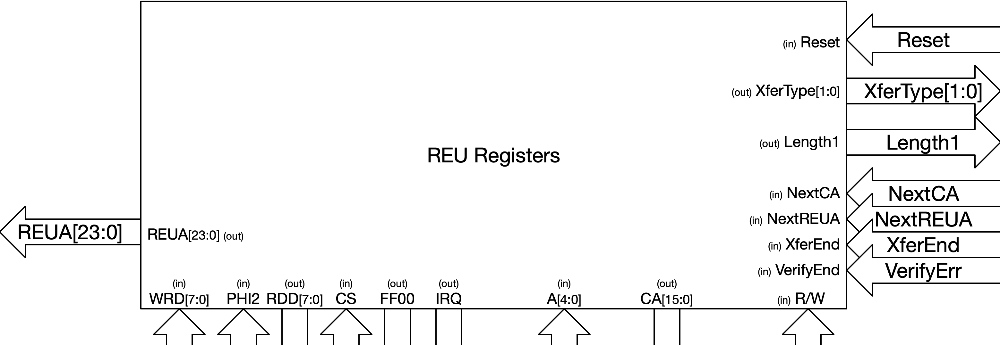
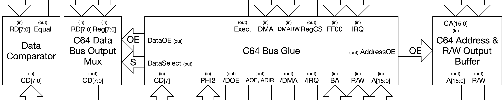
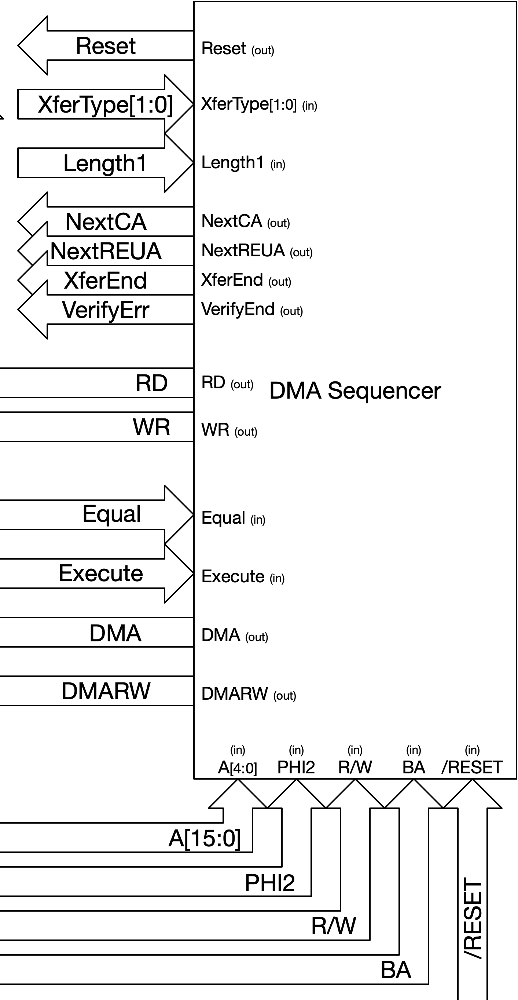
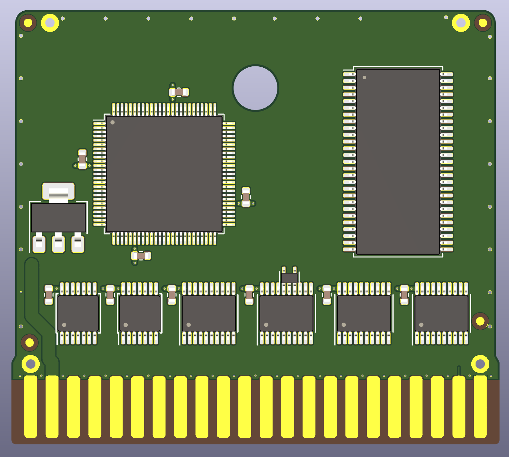

Here I will describe the architecture we have chosen to implement the REU. We have divided the design into six main subsystems. These are:
Here is a block diagram of our REU implementation:
We are going to go over each subsystem and describe its functionality.
First I will go over the SDRAM subsystem. The SDRAM controller is the simplest part of the system since its interface is so straightforward and there are not many REU-specific details in the SDRAM controller except for the timing of the access sequence. We wanted to get the complexity of SDRAM out of the rest of the system so that there we could focus on the actual geoRAM semantics. The SDRAM controller is clocked by the 8 MHz C64 dotclock and the the SDRAM itself is clocked by the inversion of the dotdlock. This clocking arrangement makes for plenty of hold time at the SDRAM and half a clock less access latency than if the controller and RAM were clocked from the same clock phase. The SDRAM runs from the dotclock inversion but the access sequence is synchronized with the PHI2 clock in that read, write, and refresh operations always happen at the same time relative to PHI2. Read/write commands and addresses are accepted by the controller at the first dotclock where PHI2 is low. This allows commands to come from a state machine clocked by the PHI2 falling edge and then immediately begin execution at the next dotclock edge. Write data is accepted at the PHI2 falling edge so as to make the write data port compatible with the 6502 bus. Addresses are directly fed to the SDRAM controller from the REU register block. SDRAM access is conducted during PHI2 low period and is completed just as PHI2 goes high again. During PHI2 high the SDRAM is refreshed.
The following timing diagram shows the behavior of the SDRAM controller after initialization and when no SDRAM requests are pending.
The following timing diagram shows the behavior of the SDRAM controller during a read command, bookended by idle operations.
The following timing diagram shows the behavior of the SDRAM controller during a write command, bookended by idle operations.
SDRAM chips require a particular initialization sequence involving loading the mode register. This sequenes accomplishes that.
The REU registers block encapsulates the register functionality of the REU while exposing the minimum interface to the rest of the system. The register block integrates the interrupt, autoload, address increment, and length decrement functionality. The block has a single read/write port to service accesses from the 6502. The registers are read asynchronously but written synchronously at the falling edge of PHI2. The register block also outputs the REU address REUA[23:0] to the SDRAM as well as the C64 address CA[15:0] back to the Commodore. The length register, however, is not output from the register block. Instead the Length1 signal indicates to the DMA Sequencer when the length register is equal to 1.
Increment, decrement, and interrupt control is provided to the REU registers block by the DMA sequencer via the NextCA, NextREUA, XferEnd, and VerifyErr signals. When the NextREUA signal is high at the falling edge of PHI2, the REUA address is incremented. Similarly, when NextCA is high at the falling edge of PHI2, the CA address in the register block is incremented and the length register is decremented. The 6502 interface has priority over the NextREUA and NextCA signals such that if a 6502 bus write to the length, CA, or REUA registers occurs concurrently with NextREUA or NextCA, the byte written by the 6502 is written to the register. The XferEnd and VerifyErr signals are used to invoke the interrupt and autoload functionality. When XferEnd is high at the falling edge of PHI2, that indicates that the current byte is the last byte of a block DMA transfer. This causes the autoload and interrupt functionality to be invoked if these features are enabled in the relevant registers. Similarly the VerifyErr signal, when asserted concurrent with XferEnd at the falling edge of PHI2, causes the verify error bit to be set in the register block and an IRQ issued if the relevant interrupt mask register bit is enabled.
I am gonna skip doing timing diagrams for the register unit because there is not much state sequencing in there. The verilog itself is the best way to capture the functionality of the registers.
Now let's get the small blocks out of the way before discussing the DMA sequencer. The function of the address output buffer block is just to output the CA address during DMA cycles. The data comparator is an asynchronous equality comparator which reports to the DMA sequencer whether the value read from SDRAM is the same as the value on the C64 data bus. The data bus output mux selects data from the register block or the SDRAM controller to be output to the C64 data bus based on whether DMA is occurring. On to the 6502 bus glue. Simple as it sounds, this piece is just asynchronous decode-type logic that selects the register block, controls the bus buffers, etc.
Finally there's the DMA sequencer. This part is complicated. Basically, it idles until a transfer operation is begun by the C64. Then it sequences the particular type of transfer, reading and writing from C64 memory and SDRAM as required, until all data has been transferred and Length1 is active or until a verify error occurs. Easier said than done but we have generated timing diagrams that will assist us in writing the verilog for the DMA sequencer.
The timing diagrams for the DMA sequencer are basically timing diagrams showing the operation of the overall system since the DMA sequencer is basically in charge of everything during a DMA transfer. So I have five diagrams here showing each of the REU transfer types (including verify success and verify error) as well as one showing what happens when the bus is not available. When the bus is not available, the DMA sequencer just repeats the same operation again during the next PHI2 clock.
We have prepared a quick layout study confirming that we can fit a TQFP-100 CPLD/FPGA, SDRAM, voltage regulator, and level-shifting buffers in the PCB size for a "stumpy" size cartridge. I think we have to add USB self-update functionality though so that will make it a bit tighter than this current layout concept.
